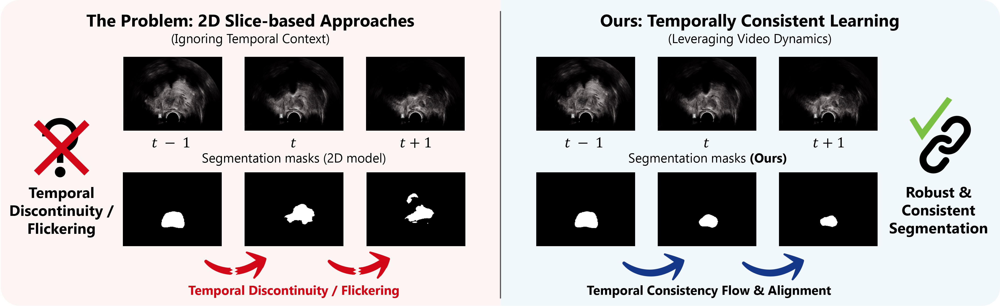
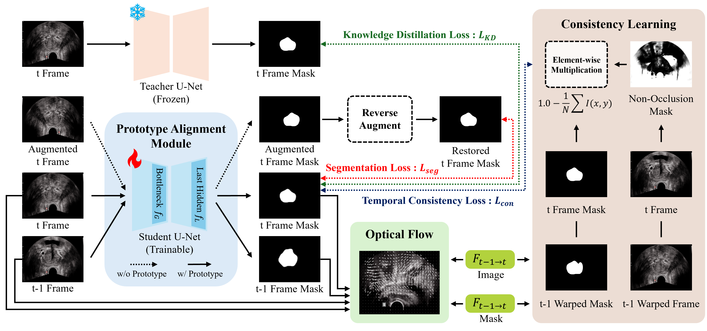
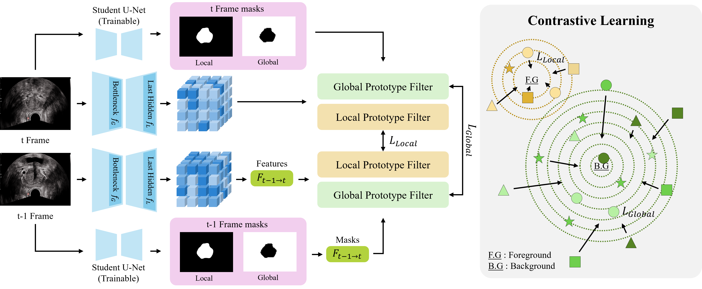
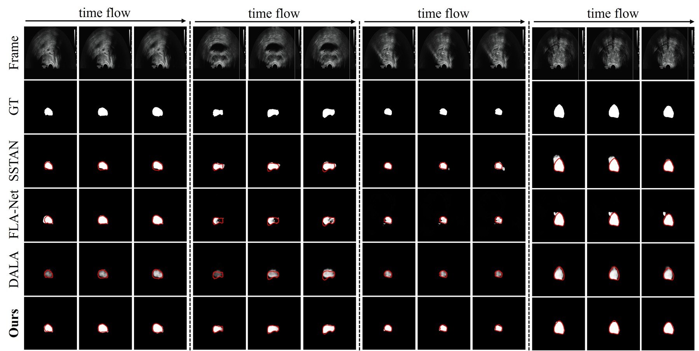

2D slice-based models
Efficient frame-by-frame inference, but predictions can fluctuate across adjacent frames because temporal context is ignored.
DTC-TRUS trains a standard 2D segmentation network to behave consistently across TRUS video frames, while preserving efficient single-frame inference at test time.

Abstract
Real-time prostate segmentation in transrectal ultrasound (TRUS) video is challenging because conventional 2D models ignore temporal context and produce flickering masks, whereas 3D or recurrent video models increase inference latency. DTC-TRUS addresses this trade-off by distilling temporal coherence into a 2D student network during training.
The framework combines confidence-weighted optical-flow consistency, dual-scale prototype alignment, self-supervised geometric equivariance, and knowledge distillation from a static-image teacher. At inference, only the 2D student is used, avoiding optical-flow computation, teacher inference, or temporal modules.
Motivation
Efficient frame-by-frame inference, but predictions can fluctuate across adjacent frames because temporal context is ignored.
Can model spatiotemporal structure, but add computation that is difficult to justify for low-latency intra-operative use.
Uses video dynamics only as training supervision, so the deployed model remains a standard 2D segmenter.
Method
DTC-TRUS supervises a student network using pixel-level motion consistency and feature-level semantic alignment, while retaining anatomical priors from a frozen teacher.

Pseudo-labels are generated from geometrically transformed frames and restored via the inverse transform, encouraging transformation-consistent segmentation without dense per-frame video labels.
A frozen static-image teacher regularizes the student so video adaptation does not erase spatial and anatomical priors learned from labeled images.
Adjacent-frame predictions are aligned by optical-flow warping. A non-occlusion confidence map down-weights unstable regions where acoustic artifacts or motion make the temporal signal unreliable.
Local foreground prototypes stabilize boundary features, while global background prototypes stabilize scene semantics. Area-adaptive weighting balances these two alignment signals.

L_total = λ_seg L_seg + λ_KD L_KD + λ_con L_con + λ_proto L_proto
The deployment path removes all training-only components: no teacher, no optical flow, and no temporal interaction module are required for inference.
Dataset
TRUS-V is a multi-view prostate ultrasound video benchmark designed to evaluate segmentation accuracy and temporal coherence in clinically realistic videos.
The benchmark is partitioned at the patient level into 2,400 training frames and 279 testing frames.
Candidate masks are initialized with an ensemble U-Net trained on a separate static dataset and then manually refined frame-by-frame by experienced radiologists.
Results
The tables below summarize the manuscript-reported performance of DTC-TRUS on SUN-SEG and TRUS-V. Values should be updated if the paper changes during review.
| Split | Sα | Emnϕ | Fwβ | Fmnβ | Dice | Sen |
|---|---|---|---|---|---|---|
| Easy | 0.816 | 0.882 | 0.738 | 0.784 | 0.746 | 0.719 |
| Hard | 0.816 | 0.878 | 0.719 | 0.758 | 0.737 | 0.741 |
Reported real-time inference: 89.95 FPS with ACSNet.
| Method | Sα | Emnϕ | Fwβ | Fmnβ | Dice | Sen |
|---|---|---|---|---|---|---|
| Ours | 0.967 | 0.988 | 0.830 | 0.828 | 0.829 | 0.839 |
Reported real-time inference: 127.97 FPS with U-Net++.

Materials
Accepted at MICCAI 2026. Official paper URL will be added after publication.
Training and inference code are available in the official GitHub repository.
github.com/DYDevelop/DTC-TRUSTRUS-V release, access request, or data-use agreement instructions should be added here.
Citation
Proceedings details, DOI, and official URL will be added after publication.
@inproceedings{kim2026dtctrus,
title = {Distilling Temporal Coherence into 2D Networks for Transrectal Ultrasound Prostate Video Segmentation},
author = {Kim, Dong Yeong and Lee, JunGyu and Choi, Jaewon and Seo, June Young and Kim, Myeongseop and Choi, Jinwook and Kim, Taek Min and Kim, Young-Gon},
booktitle = {International Conference on Medical Image Computing and Computer-Assisted Intervention (MICCAI)},
year = {2026},
note = {Accepted}
}